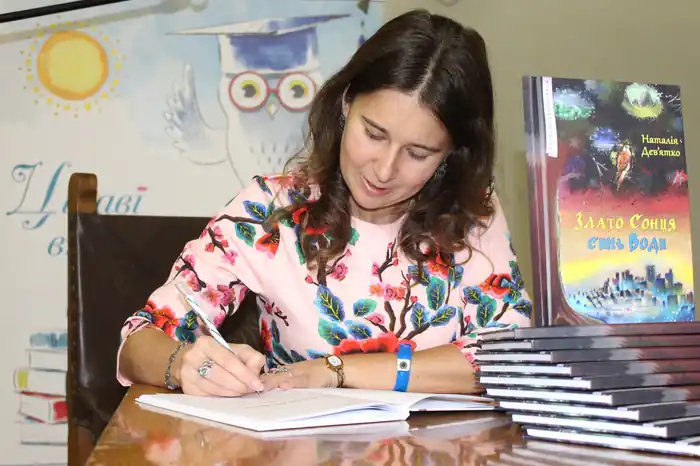
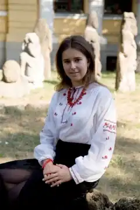

Дев'ятко Наталія Володимирівна – український прозаїк, перекладач, журналіст, науковець.
Народилася 11 січня 1983 р. у м. Дніпро.
Жанри – історична і психологічна проза, наукова фантастика, фентезі, пригодницькі казки для дітей та юнацтва. Освіта Закінчила Дніпропетровський національний університет імені Олеся Гончара (факультет систем і засобів масової комунікації), аспірантуру Дніпропетровського національного університету ім. Олеся Гончара (спеціальність – журналістика). Кандидат філософських наук (соціальна філософія та філософія історії). Тема дисертаційного дослідження – "Міфологічний образ України як світоглядно-комунікативний феномен: соціально-філософський аналіз" (2013 р.). Професійна і громадська діяльність Редактор відділів "Критика", "Проза", "Конкурс" першого україномовного журналу фантастики "Український Фантастичний Оглядач (УФО)" у 2007–2009, першого україномовного журналу фантастики за часів незалежності України. Засновник та організатор щорічного міжнародного літературного конкурсу "Современная нереалистическая проза" (2006–2009), в якому кожного року брали участь 300–400 авторів з усього світу. Член журі і координатор щорічних обласних літературних конкурсів "Молода муза" (2008—2013), "Літературна надія Дніпра" (2011), "Україна є!" (2011), "Краю мій, барвисте Придніпров'я" (2015) та ін. обласних конкурсів. Голова журі Всеукраїнського конкурсу творчої молоді "Літературна надія Дніпра" (2013, 2015, 2017) і Всеукраїнських поетичних конкурсів "Чарівний мій Дніпропетровськ" (2014), "Чарівне місто над Дніпром" (2015); член журі Всеукраїнської літературної премії ім. Олександри Кравченко (Девіль) (2013), Першого Всеукраїнського літературного конкурсу "Відродження Дніпра" (2016), Міжнародного літературного конкурсу романів, п'єс, кіносценаріїв, пісенної лірики та творів для дітей "Коронація слова" (2016) та ін. Керівник обласного літературного об'єднання ім. Павла Кононенка для молодих письменників (з 2010). Співзасновник сайту "Літературна Дніпропетровщина" (2010–2013, з 2015-го не існує) і блогу рецензій та відгуків на твори для дітей "Книжкова Скриня" (з 2013 року і по сьогодні) Член Національної Спілки журналістів України (з 2000) і Національної Спілки письменників України (з 2006). Член Всеукраїнського Центру дослідження літератури для дітей та юнацтва. Протягом останніх трьох років (2014–2020 рр.) прочитала понад 600 книг сучасних українських авторів, які пишуть для дитячої та юнацької аудиторії. Три роки поспіль брала участь в експертизі підручників з української літератури для 9, 10, 11 і 2 класу (2017-2019). Упорядник понад 10 колективних збірників. Співавтор і співкерівник проекту "Аудіокнига "Письменники Дніпропетровщини – шкільним бібліотекам" (2012). Співупорядник електронної книги "Наш кращий друг – природа: Збірник творів письменників Дніпропетровської області (Екологічна читанка)" – 2013 рік. Автор і керівник міжнародного освітньо-культурного проекту "Рідний край у словах і барвах" – 2015–2016 рік. Лауреат літературних премій ім. В. Підмогильного (2015), ім. В. Юхимовича (2016), ім. М. Утриска (2017), переможець Всеукраїнського літературного конкурсу "Крилатий Лев" (2016), Регіонального літературного конкурсу "Кальміюс" (2016), шестиразовий лауреат Міжнародного літературного конкурсу романів, п'єс, кіносценаріїв, пісенної лірики "Коронація слова" (у номінації "Романи" – 2017, 2018, 2020; у номінації "Кіносценарії" – 2020 р.; спецвідзнака за кращий твір про м. Дніпро – 2018 р., кращий рецензент – 2019 р.), має спецвідзнаку від незалежних читачів І-го літературного конкурсу "Львівські перехрестя" від Львівського жіночого літературного клубу (2017) та інші літературні нагороди. Книги Співавтор понад 30 книг, альманахів, колективних збірників. Автор збірників "Между светом и тенью" (2003), "Три кроки до Світанку" (2005), "Казки Країни Сновидінь" (2007), пригодницько-фентезійної трилогії "Скарби Примарних островів" (2011-2020), фольк-роману "Злато Сонця, синь Води" (2014, 2018), повісті фентезі "Легенда про юну Весну" (2015, 2018); історичної книги "Я, Олександр Поль" (у співавторстві, 2020); аудіокниг – "Скарби Примарних островів. Карта і компас" (2014), "Злато Сонця, синь Води" (2015), "Легенда про юну Весну" (2015), "Я – камінь" (2017), "Казки та оповідання для дітей" (2017) тощо. У 2017-му році твори авторки увійшли до оновленої шкільної програми з вивчення української літератури: "Легенда про юну Весну" – 7 клас, "Скарби Примарних островів" – 9 клас, "Злато Сонця, синь Води" – 10 клас. Сторінка на Вікіпедії — https://uk.wikipedia.org/wiki/Дев'ятко_Наталія_Володимирівна Канал на Ютуб — https://www.youtube.com/channel/UCzu8vYldsC_HvlKTQGGCzMA Авторська сторінка на FB — https://www.facebook.com/Чарівні-світи-2021444134616358/ Група на FB — https://www.facebook.com/groups/ukrbook/ Персональна сторінка FB — https://www.facebook.com/natalia.devyatko/ Книги на "Слухай" — https://sluhay.com.ua/find/author=Наталія_Дев'ятко Сторінка на "Букнет" — https://booknet.com/uk/natalya-devyatko-natalia-devyatko-u5508784